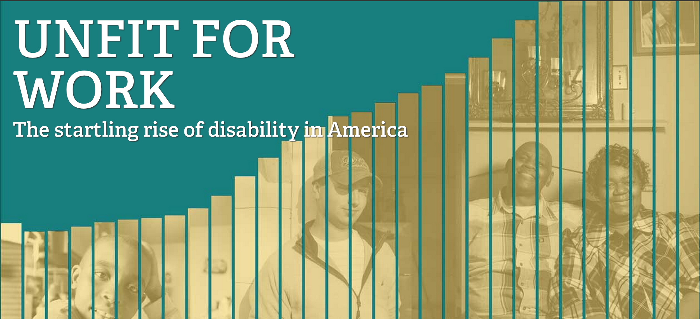

How I Learned to
Stop Worrying
And Learn to Code
One possible path
But not the only one!
- Inspiration: The Housing Guide
- NBN Interactive
- Chicago Tribune News Applications
- NBN Webmaster
- Knight Lab Undergraduate Fellow: SoundCite
journalism is indispensable.
the web matters.


We no longer control the means of production publication.
we need our own
means of publishing
on the web.
What does that look like?
how do we get there?
stop worrying.
learn how to code.
how do we get there?
stop worrying.
learn how to learn.
Every website has a unique IP Address.
This is a series of 4 (or 6) numbers.
My personal site's IP Address is 192.31.186.144.
Tools of the web
- HyperText Markup Language (HTML)
- Describe content
- Cascading Style Sheets (CSS)
- Style
- JavaScript
- Behavior
Tools of the web developer
- A modern web browser — Google Chrome
- A plain text editor — Sublime Text 2
Do the math
Adobe Creative Cloud = $49 per month*
Text editor + browser = Free
*you probably still need Photoshop and Illustrator for real design work...
HTML Sample
<!DOCTYPE html>
<html>
<head>
<title>My first HTML page!</title>
</head>
<body>
<p>Hello world!</p>
</body>
</html>
CSS Sample
body {
background-color: #fdf6e3;
}
p {
font-family: "ff-tisa-web-pro", Georgia, serif;
font-size: 36px;
color: #657B83;
}
JavaScript Sample
function myFunction() {
alert("Hello World!");
}
Tutorial sources
Warning:
Tutorials will only get you so far!
Get involved
(at Northwestern)
- North by Northwestern Interactive
- Knight Lab
- Take classes
- EECS 130: Tools and Technology of the Web
- EECS 330: Human-Computer Interaction
- JOUR 320: Interactive News
- JOUR 390: Web Producing
build things.
ask questions.
here is a great twitter list of people to ask.
always be Googlin'.
If you're having a problem, someone else has already had the problem, solved the problem and posted the solution online so you can solve it too.
These slides were all programmed!
<section>
<h2>These slides were programmed!</h2>
</section>
Immerse yourself
programming is about solving problems.
Programming is easy once you know what problem you actually need to solve.
— Heather Billings, Chicago Tribune News Applications
The three virtues of a programmer
- Laziness: I hate doing work.
- Impatience: I hate waiting.
- Hubris: I can do anything with a computer.
start small.
think big.
thank you.
good luck.